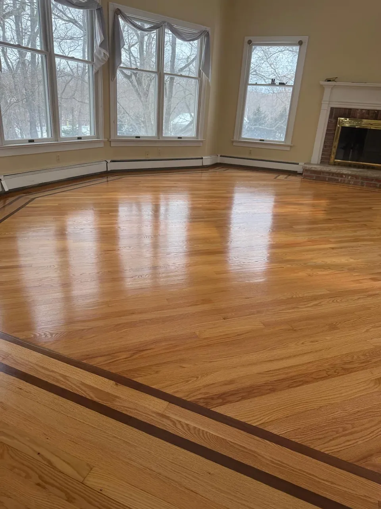
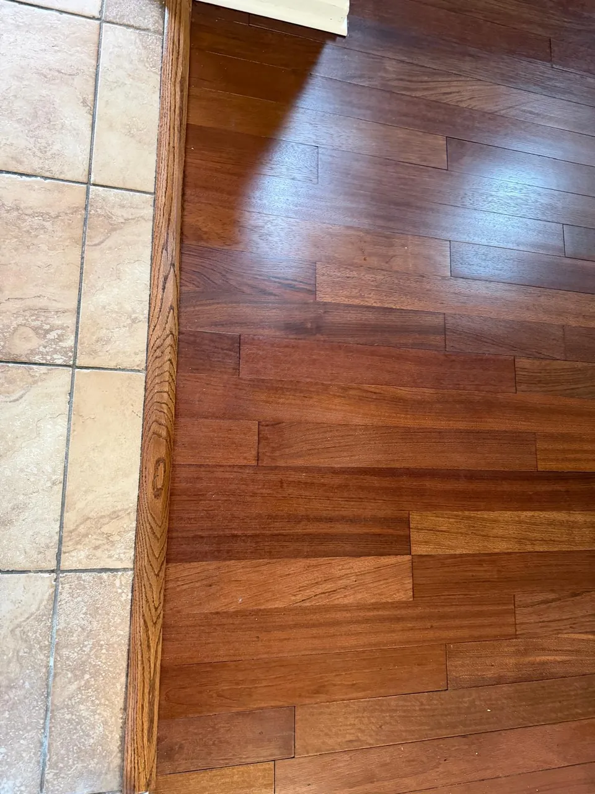

In this article
Quick answer
Both can be excellent choices. Hardwood offers authentic natural character and long-term refinishing potential, while LVP generally provides greater resistance to everyday moisture and easier maintenance for busy households. In many New Jersey homes, the smartest solution is hardwood in the main living spaces and LVP in basements, mudrooms and other moisture-prone areas.
Introduction
When New Jersey homeowners compare flooring options, the decision often comes down to two premium choices: real hardwood and Luxury Vinyl Plank, or LVP.
Both can create an attractive, high-end finish. Both can work beautifully in modern and traditional homes. And both can be installed professionally to deliver years of dependable performance.
The real question is which material makes more sense for your household.
For a homeowner with children, dogs, active entertaining, and a busy schedule, the answer may be different from someone prioritizing traditional craftsmanship, architectural character, and long-term resale appeal.
New Jersey's climate makes that decision even more important.
The state experiences freezing winter temperatures, dry indoor air caused by heating systems, humid summers, heavy rain, and the muddy conditions that often come with spring and winter storms. Those seasonal changes can affect flooring differently, particularly when it comes to moisture and wood movement.
So, when comparing LVP vs hardwood floors NJ homeowners should consider more than color and appearance. They should think about humidity, moisture exposure, maintenance, pets, room location, resale expectations, and how the home is actually used.
Costa Flooring helps homeowners throughout Northern and Central New Jersey evaluate those factors before choosing a material. With more than 10 years of flooring experience, licensed and insured service, premium flooring materials, and professional installation, the goal is not simply to sell one type of floor. It is to recommend the material that makes sense for the home.
How New Jersey's climate affects flooring
New Jersey has four distinct seasons, and the conditions inside a home can change substantially throughout the year.
Winter can bring freezing temperatures and very dry indoor air. Heating systems reduce relative humidity, particularly in tightly insulated homes.
Then summer arrives with warm, humid conditions. Indoor humidity can increase when air conditioning is not maintaining consistent moisture levels.
These fluctuations matter when evaluating humidity and hardwood floors.
WHardwood in winterDry heated air: boards give up moisture and shrink. Small gaps can show.
SHardwood in summerHumid air: boards take on moisture and swell. Too much can cup the edges.
WLVP in winterManufactured core: little change with indoor humidity.
SLVP in summerSame floor, same seams, much less seasonal movement.
How seasonal humidity affects hardwood
Hardwood is a natural material. Wood responds to changes in moisture by expanding and contracting.
During humid periods, wood can absorb moisture and expand. During dry conditions, it can release moisture and contract.
Some degree of seasonal movement is normal.
Professional hardwood installation accounts for this behavior through proper acclimation, installation methods, expansion allowances, subfloor preparation, and environmental considerations.
That is why professional installation is particularly important in a state with significant seasonal variation.
Homeowners should also maintain reasonable indoor humidity levels throughout the year. A flooring contractor can provide maintenance and environmental recommendations based on the specific flooring system.
Why LVP reacts differently
LVP is manufactured rather than grown as a natural wood product. Its construction makes it considerably less sensitive to ordinary household humidity fluctuations than solid hardwood.
That stability is one reason LVP has become increasingly popular among homeowners looking for water resistant flooring New Jersey families can use in busy areas of the home.
However, water resistance does not mean every LVP installation is completely waterproof under every circumstance. The performance of any flooring system depends on the product, installation method, subfloor, seams, and the amount of moisture involved.
How hardwood performs in New Jersey homes
Hardwood remains one of the most desirable flooring materials for homeowners who want authentic natural character.
Every board has variations in grain, color, and texture. Those details give hardwood a quality that manufactured flooring is designed to replicate but cannot completely reproduce.
Advantages of hardwood
- Authentic natural material.
- Timeless appearance.
- Strong appeal in higher-value homes.
- Can potentially be refinished multiple times, depending on the product and construction.
- Long service life with appropriate care.
- Works well with traditional, transitional, and contemporary interiors.
Hardwood is particularly compelling in main living areas where appearance and architectural character are priorities.

In established communities such as Short Hills, Millburn, Summit, and Montclair, many homes have design details that pair naturally with real wood flooring.
That doesn't mean hardwood is automatically the right choice for every room. Moisture exposure, household activity, budget, and maintenance expectations should all be considered.
Hardwood requires thoughtful installation
The biggest mistake is treating hardwood installation like a simple cosmetic upgrade.
The installer needs to evaluate the subfloor, moisture conditions, transitions, existing flooring, and the characteristics of the selected hardwood.
A professional installation helps account for the natural movement of wood throughout New Jersey's changing seasons.
If your home already has hardwood that has lost its original appearance, replacement may not even be necessary. Professional hardwood floor refinishing can sometimes restore an existing floor while preserving the character of the original material.
How LVP performs in New Jersey homes
Luxury Vinyl Plank has become a popular alternative for homeowners who want the visual appeal of wood with a more practical approach to moisture and everyday wear.
Modern LVP can closely resemble natural hardwood, with realistic grain patterns, textures, colors, and plank dimensions.
Advantages of LVP
- Strong resistance to everyday moisture exposure.
- Easy routine maintenance.
- Comfortable option for busy households.
- Available in many wood-inspired styles.
- Often well suited to homes with pets and children.
- Less sensitive to normal household humidity changes than natural hardwood.
- Can be an attractive option for certain lower-level spaces.
For homeowners who need durable flooring for dogs, LVP can be particularly appealing.
Pet accidents, wet paws, muddy footprints, and frequent cleaning are common realities for many households. A quality LVP product can make those everyday situations easier to manage.
Still, product quality matters. Not all vinyl flooring is manufactured to the same standards, so homeowners should evaluate wear layers, construction, installation requirements, warranty terms, and overall product quality.
LVP vs. hardwood floors NJ: side-by-side comparison
When comparing LVP vs hardwood floors NJ homeowners should look beyond initial appearance.
| Factor | LVP | Hardwood |
|---|---|---|
| Moisture resistance | Generally the stronger choice for areas exposed to spills, wet shoes, pet accidents, and everyday moisture. | More sensitive to prolonged moisture exposure and requires appropriate environmental control and maintenance. |
| Seasonal humidity | Generally stable under normal indoor humidity fluctuations. | Naturally responds to humidity and temperature changes, making proper installation and indoor environmental control important. |
| Appearance | Modern products can offer highly realistic wood visuals and a wide variety of styles. | Provides authentic natural wood character, grain variation, and the ability to refinish the surface. |
| Maintenance | Usually straightforward to clean and maintain. | Also relatively easy to maintain, but requires appropriate cleaning products and protection against excessive moisture and scratching. |
| Pets | Often an excellent choice for active households with dogs. | Can work well with pets, but scratches, moisture, and accidents require more attention. |
| Long-term restoration | Damaged sections may sometimes be replaced depending on the installation system and available matching product. | Can potentially be sanded and refinished, providing a major long-term advantage. |
Which flooring is better for dogs and pets?
There is no single answer for every pet-owning household.
However, if your dog regularly runs through the house after being outside, LVP has a practical advantage.
Consider a typical New Jersey winter.
Your dog goes outside. The ground is wet or covered with slush. The paws come back inside carrying moisture, dirt, and salt residue.
With LVP, those situations are generally easier to manage.
Hardwood can absolutely work in homes with dogs, but homeowners need to be more intentional about maintenance. Water should not be allowed to sit on the floor, and furniture pads, rugs, and regular nail trimming can help reduce scratching. (If it's already scratched, here's how scratched hardwood gets fixed.)
For families with multiple pets, large dogs, or frequent outdoor activity, LVP may provide the lower-maintenance solution.
For households where natural materials and architectural character take priority, hardwood may still be worth the additional care.
Which is better for basements and moisture-prone areas?
Basements deserve special consideration.
Even a well-finished New Jersey basement can experience higher moisture levels than the main floors of the home.
Water intrusion, condensation, humidity, plumbing issues, and seasonal moisture can all create risks.
This is where LVP often becomes the more practical flooring choice.
As a form of water resistant flooring New Jersey homeowners can use in many applications, quality LVP can provide a strong combination of appearance and practicality.
However, flooring should never be used to hide an underlying moisture problem.
Before installing any flooring in a basement, the source and level of moisture should be evaluated. A professional flooring contractor can assess the installation conditions and identify potential concerns.
For main-level living rooms, dining rooms, libraries, and formal areas, the balance may shift toward hardwood because moisture exposure is generally lower and the visual impact of natural wood becomes more valuable.
Which flooring adds more value to a New Jersey home?
For homeowners thinking about resale, hardwood often has an advantage because buyers recognize authentic wood flooring as a premium feature.
That can be especially relevant in higher-value properties where buyers expect quality materials and cohesive architectural design.
A beautiful hardwood floor can complement crown molding, custom millwork, fireplaces, built-ins, and other traditional details common in established New Jersey homes.
However, LVP should not be dismissed as a lower-quality choice simply because it is not real wood.
High-quality LVP can look sophisticated and perform exceptionally well in the right application. In a busy household, a durable, attractive LVP installation may be more valuable to the homeowner than a material that requires more maintenance.
The strongest approach is to consider the property's overall positioning.
A formal living room in a high-end Short Hills home may benefit from the authenticity of hardwood.
A finished basement, mudroom, laundry area, or heavily used family space may benefit from LVP's practical characteristics.
Choosing flooring by room
Instead of choosing one material for the entire house, homeowners can consider how each room is used.
Hardwood
Living rooms and dining rooms
Hardwood is often an excellent choice when appearance, natural character, and long-term appeal are priorities.
Either
Kitchens
Both materials can work. LVP may appeal to households concerned about spills, pets, and heavy traffic. Hardwood can create a seamless look when it extends from adjacent living spaces into the kitchen.
Either
Bedrooms
Hardwood provides a warm, timeless appearance and can be paired with area rugs. LVP can also work well where easy maintenance is a priority.
LVP
Basements
LVP is often worth considering because of its resistance to everyday moisture and its ability to handle active family use.
LVP
Mudrooms
This is another area where LVP's practical characteristics can be valuable. Mud, snow, rain, salt, and wet footwear make the mudroom one of the hardest-working spaces in a New Jersey home.
Match the floor
Stairs
If you're replacing flooring throughout the main level, don't overlook the stairs. A professionally coordinated stair installation can make the transition between floors feel intentional rather than pieced together.

What works best in high-value homes in Short Hills and Montclair?
Luxury does not always mean choosing the most expensive material.
In a high-value home, the better question is whether the flooring complements the architecture and the way the family actually lives.
For example, a homeowner in Short Hills may want natural hardwood throughout formal entertaining areas but prefer LVP in a finished basement where children and dogs spend most of their time.
A Montclair homeowner renovating an older property may prioritize preserving existing hardwood floors through refinishing rather than replacing them.
In Summit, a homeowner preparing a property for resale may prioritize a cohesive hardwood installation that creates continuity between rooms.
These are different projects, even though all three involve premium homes.
That is why an experienced flooring contractor should evaluate the entire project instead of automatically recommending one material.
Costa Flooring provides both hardwood and Luxury Vinyl Plank installation, allowing homeowners to compare materials based on actual household needs.
If you're considering luxury vinyl plank installation Short Hills, for example, the consultation should address the room's traffic, moisture exposure, pets, design goals, and expected lifespan before you choose a product.
How to choose between LVP and hardwood
A simple way to narrow the decision is to ask five questions.
How much moisture does the floor encounter?
If the area frequently encounters wet shoes, spills, or pet accidents, LVP may have the practical advantage.
How important is authentic wood?
If natural material, grain variation, and future refinishing are major priorities, hardwood deserves serious consideration.
Do you have large or active dogs?
For households where pet activity is intense, LVP may offer easier everyday maintenance.
Is resale value a major consideration?
Hardwood can be particularly compelling in higher-end homes and formal living areas.
What does the entire home need?
You don't necessarily have to choose one material everywhere. A combination of hardwood in primary living spaces and LVP in moisture-prone or heavily used areas can create a practical and visually cohesive home.
The most important step is making the decision before installation begins.
Costa Flooring offers free in-home estimates and honest recommendations, so homeowners can compare flooring materials, understand installation requirements, and select an option based on their priorities rather than simply choosing whatever looks best in a showroom.
Conclusion
The choice between LVP and hardwood is not really about which flooring is universally better.
It's about which flooring performs better for your home.
For a New Jersey family with two dogs, children, and a busy schedule, LVP may provide the moisture resistance and easy maintenance that make everyday life simpler.
For a homeowner renovating a high-value living room, preserving architectural character, or investing in a floor that can potentially be refinished years from now, hardwood may be the better long-term choice.
And in many homes, the smartest solution is a combination of both.
New Jersey's drastic seasonal shifts make professional installation especially important. The right material needs to be paired with proper subfloor preparation, appropriate installation practices, and recommendations that account for the home's environment.
Costa Flooring has more than 10 years of flooring experience helping homeowners throughout communities including Short Hills, Montclair, Westfield, Summit, Millburn, Chatham, Madison, Livingston, Cranford, Berkeley Heights, and surrounding Northern and Central New Jersey areas.
Whether you're considering hardwood, luxury vinyl plank installation Short Hills homeowners can rely on, or simply want an honest comparison between the two, you don't have to make the decision based on a sample board alone.
Schedule a free in-home estimate with Costa Flooring to discuss your home's layout, lifestyle, pets, moisture exposure, and design goals. You'll receive professional guidance on the flooring option that makes the most sense for your property and your family.
Call (862) 452-2181 today to get started.